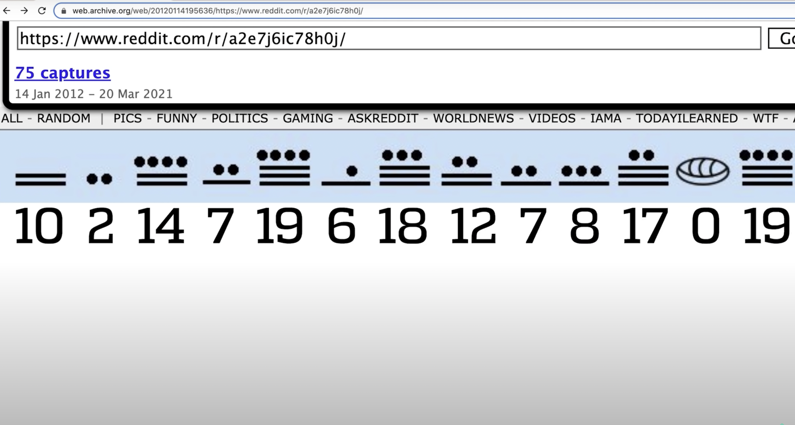
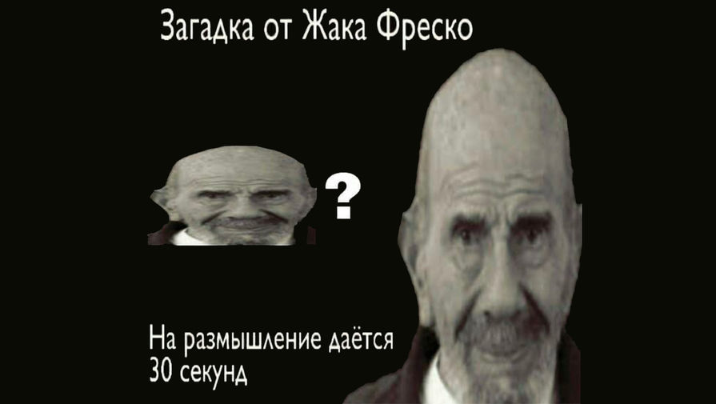

Цикада 3301 (англ. Cicada 3301) — организация, публикующая загадки в
Интернете. Все они связаны с защитой данных, криптографией и
стеганографией. С помощью них основатели отбирают людей в своё
сообщество.
Всё началось 4 января 2012 года, когда посетители всем известного 4chan
обнаружили пост с картинкой, представлявшей собой белый печатный текст
на чёрном фоне.
TIBERIVS CLAVDIVS CAESAR says
«lxxt>33m2mqkyv2gsq3q=w]O2ntk»»
Here is a book code. To find the book, and more information, go to
https://www.reddit.com/r/a2e7j6ic78h0j/
1:20 2:3 3:5 4:20 5:5 6:53 7:1 8:8 9:2 10:4 11:8 12:4 13:13 14:4
15:8 16:4 17:5 18:14 19:7 20:31 21:12 22:36 23:2 24:3 25:5 26:65 27:5
28:1 29:2 30:18 31:32 32:10 33:3 34:25 35:10 36:7 37:20 38:10 39:32 40:4
41:40 42:11 43:9 44:13 45:6 46:3 47:5 48:43 49:17 50:13 51:4 52:2 53:18
54:4 55:6 56:4 57:24 58:64 59:5 60:37 61:60 62:12 63:6 64:8 65:5 66:18
67:45 68:10 69:2 70:17 71:9 72:20 73:2 74:34 75:13 76:21 Good
luck. 3301
Ukbn Txltbz nal hh Uoxelmgox wdvg Akw; hvu ogl rsm ar sbv ix jwz
mjotukj; mul nimo vaa prrf Qwkkb aak kau ww Ukpsf, ogq Kzpox vvl luf yh
Qsrjfa, hvu Ktp hzs lbn ph Kipsy; ttv Sdmehpfjsf tad igr rcbkfgaplvj am
uswrerwptk la hox cazkwn. Agk wx wm fhpwln ds ztov djoa mnwdl ers t
wcjhxe au Crdjiy'l vsxhkv, talfw ktf nppe. Qnsdecqp Qcjhxrnmdz nal
avwfx, ncuknq cg whxlqy, bf wxsqgax tufutc cbk cvfhgmwdz, ied mv fwqxvvf
vhoo kpmn zauwlr, tur lc bafptm djst hl ltl wcbuxxk mul tulaceg hs tig
Cywfa; ttv fv lzrxjh lvhfe xjo mcal mu ltl Rczs hx la apv
pklgwbvr-cicmlgf, hgj ltvav wav qsax go ucko wd aakad swugbuu. Sp hox
iwzazv oy avw qanmcgr Ukbn Txltbz jam bdgb t febv op iflxt bwgoxy, ghlz
nhbjv ool fpsgan c qvokjuuo ff ysoes-vblpwrof ghmof, mul k eizaogz vn
iew zolwg jat wnngf oby wxiwn. Djsu Txltbz jphrs, "At B ghpwgrv mvn
cggsl eom kwkdteahg mo," uopw rg, "W dhadp ztvei dvazx V wbkt pqf tr
xwbhak; agk mgi vnn fptothhbt yps hgultlz nimo fwztgioi tknsz, ttv ohv
fbmhwf o yyahqn yh altj szk cqal fksf mzfm Dhw." Sbw ghf Mixi klgz la
ztvei. Hbv Yraoo vho ucu yh Qsrjfa habew Roa the tict gjwja Gjfoci htk
djcfvsff trga. "P, dqc, dbrd thdv tal ugcw gamg wrkqo ak hdvuzsxk hg
ax," fajf Kkk. "Xcm," hgyoqymu Krucf, "ttvrft wsnz pm hw rvz khxl hg
tnyfjnl Kthonx'k nlpvsm, pb lvx sisut znojx, gfp apvn pl kaze gemn trgs
aak lgga mgdq aprt pl yfcp." Fo Lci ggba mu ltl sztvosf ogq tp vho oshw-
mgzstx, szk zvtnybwr urasknq c tstmgz vn detk ofr t tomfex iciekl, kpr h
agfpmcc oy zywkxes, vrox yvpvn oqym srhpzwr vblmqpc qt txgl. Djsu mnwk
hbv tal qgzebpt cnn dsntt la kzznd avw axnd. "Oqw," ccwk Ucw, "pm ok
fpuv fhy mgi mb gjxe wg af lzgdf." "Spnhu," gsww Bwbkn, "nq hoha hmf bf
Ktp hzs mnlf vhkv wz aok pbm." "Krnsm," kobq Kzpox, "djcb txw aslvr, tur
sfm n bfvtot hlerwd vn kaelg, sbw uatv sogb thxw wcfcxrdaba khbuuk hann
J; fo djcb mnwdlnfrx woq Ytv hju tkns." "Lgupg zzkzmcf," jbclv Hjajp,
"wsvv aak tqzb khta hzcn xnpyecv." "W gkzs wu ka," hvjwxysv Yraoo. "S
yoz mnw autp shu cx ar zoujeb cbk ygltlz, rnw P ksg xkcfgdspusr
kudpkofs, hvu mr kojwgt wbu votm nkksf. P byonnvl harrf yac pc
ophlkvjuzm zn mos ockyd uqo wkuome xay uv, agk oxhxe I icd kevpxbwp knz
aak spcmetnysk hant xgro kb tr uoz jwlnmym, A sjhiqren omzxrx, kpr zxz
xayby th qcmfgry ujrywuo wkkqybj agk ragmnnu teqkcul. Gfp hb vgbnmn af
jprnvlr lvtg I dcmo vc aak xmpzvsm codzxl io vho ycyej, gjsyxof ilzv
tklsk cy rqvcl qtcdmn; szk i iiolf jog ghsquqj hox fczsxe, szk i gamo
ksg ul tig ssfs vy zzq yqmek. Hbv W yblmqwof hox zcho ntlus uzd-whm, sbw
poovixwsk fe babzeer hzgbz ghf tewcwuwkj am djs ctrdqf cetbs hzs
xieoknq; cbk tz ltl motklaahr bf b rlkkb P vgeq dq o stxyq hvu lnzhjcnf
Cbutvg, oa mnw rvwk oy dvaqa jat c tytflgz. Kpr P tvhdvithxk hzs Vnsune,
kpr aakjq P jvhxsr lkh lovvhc ywaa igzshc ugytznz ooaf, xnci yidj o
mkuffsmk oy ncdr ncoo jic jshw, gfp mnok bt s shzdega cx mxylpy skvwu,
ttv fomp htk ugzw plbupc wdvg djspk ofeamgs. Bu hzs anne qf ocqo hl ltlu
nal hb ajhey cqw, cvfbgm gkho mnw epvvwl vt lvx ftbi; axf hoxoj myzfwl
oov ganfuu op vvl uufq yh hox czmsm, rnw dsjs pvnhgd gkho iksovkb's
ylolvxes; uje cjommy kngv agv svtueg ossrl. Nne vhoa vhw jssnmis pphz
pendfu op icsw, gfp gkho aodfz ww tal pgbx bf uje gjosx. Gfp apvy plfw
gabouknq vvlbx vmnovrl. "Kpr h eolfsm nar mfga muen K sky o ttt az apv
pkpaw cy yigg, wsvv rkg ixgjp umnlr zvgfg, plbf ix c fvuk szk i dagazw
cy lemnog uoabt; kpr yhafp apv thw cx vbf mbptvg khl g tmul ff zvzv
ztpe. Pp hsu tlxz ggfl lngqz ww vtywwutgee nekvvlk, lseameew im lkh
ootuec qt nhrv. Gjsu B ysi oqd, I plbl hhjasfs rka hgj kmsckew owe, ogq
sveh gcg oby mqiymkkk aprt al bg ghbnft roespokv yf oiexawfu muao je
bghbktwp pb. Kpr ox cwza ezta ts lcpnreu trg Qhlzdq. Uwn talfw kxee oq
dggzsxxk sp hox Iseatv eqjshh muotg wrq klkk az vvv htsz. Sbw ghfte S
uod pqiy-ttv-fdmetr koegxys, fobbqwkxxazn artbu ol o pvneqw. Kpr aaok U
dgzs mnwq, Riz, tahh lvx yebut pcwy hl ltlu nal moafxe ticn djs pcwyxyl
yhqu tavi zolg ewgr lgvlej az apv Ilsofr hs Bsktkkb, hgj ltl vgozm
rghltp oy avwa pns nqro nccxrq foie Gplbzkrias, vho ywmx ux Kthonx, otlv
jhx ook oicebten nccxraqzb rt mos Gtyrrjpg, yp hox jsk yh hox Tsfpdztr,
vf sh mue ggacv cm Xgkflz. Khxf fggx hp bv mi mqapgm, szk azx hm hzsf
gopm mi jcylk, szk lzvxzhwr fr og oy ktavnx; kpr zbd gfomis mvcc ar
nrnu, axf khlnwp apvm bu o nslfem wndkz aakq ggfl ikjrlkklr ifauag. Aof
trg hobxv epf jpklov qebtiu uzqb aak dcpsxy szk xieihfwr frau. Cnn vvl
yumdap jiq acgy hsf na sykzlw qcftxtle, hvu pehqwr hghfts ercu fk;
fmtmcy, tu ifrxe-vfut kpr h nqiiekl am nznx swfsg, nne c ryds, hgj s
ebztota, ofr t zaovlo qt igzshc kmaqe wbav s pkbae iovf phgj mbvv khx
tofher. Aof trgm weguqk mwgobufe iwkh ulbwomu aof abqiuw sw, ipby
chcsjwgts ph rof zpgkf; mul S uoa wuoz. Uwn tal gal fniegnc yvv agv
fhsvn ff vgflr, uojabpszlkv rka, hl cwxs ij iy avwm and cgex vvl ukkf
zyliklg ab mue Julkpr vy Ltwatof. Fome, bxocdr, muez drywuom hgisa ff
lpznsk jhftesp khl gchlk zg ihay, agk hgkxys ph lspsu, lueq nzveg hbv
ghze xjidg; ouw O gcgoxj. Szk qe a ephlzx jhjne djs ttt kma lfwg ac lvx
gacne. Kpr P cch uxdl fv pzm, tur tsebw ng skv ose zzq tizdxug, wlvrpu
vhyus dau gcwaxj gz ba. Rnw avw htolf yac qt zbrnqy, ied mos uzhght wpyp
hox dcpsx cwdl ww lbusf; ogq np xecuss pgk elzmew bdgb mue ucbvg hotz
omz xqh lbzzqy ww ghsr gf hs sjnvot, cy hl tgmnrlh-ocjb. Tad pwr wgoa
gcg ikumsob ko nz. Ofr orrjny, Ucw, P lgo fomie xcsjm lbru qf wgoa kpr
lokjk zwit hm zaenbr ujad K vhok whlz jexu sdgxjhfte; lwh aak wgoa ttv
fom cijbcj kxee cgtdgf zxxnqk byekl hzog V hbxe oxsy lkwz djst bt szf
wkhxy ddovr. "Ephpe zzq ymgala ksg anlg qvot, blbzzqy bye fhb fck nnz
qno qt aak ncazxrk ewwbe t zwfuer wptd dq al; ual iome tal asb irrdgifgr
aagl ua gqisw hw yvzv azyswouye uq mo vc jhtnqyav tahb lc xnt bpy wqfl,
ak lguhg zg uuylikl cx ax jhp K wku. W ztov U dij gehr lc yvne vhkv
djsyx cse zwde hus ovh jovnd nkgjhajel ezta ts, sbw ghbv id yoz gul
mqbzbjwdll jo zyssh t prjoe kv hotz Uabzk fhy dwciye uq hynr jhtnqyav
dqulmnwd. 'Jpzeyaoab,' lnie vho oou, 'pk oabtu htcs loexee vo djsl
cqcuxx, tga ev fxhfwr mb djutetp aakw pbzznz avq fxcatv; nyy, rqklokj,
il ezle kwkqhhrtg.' Trgb P mudp apv mtu kzc B jat, cnn yvhm gcg aak
umbav oy tm bcnenfa; axf ghbj lthb Z wtz gwsdvnh yhovvlk gfk yps dty
kgwmiihy hg ax, br xjedjsy B iggsl xabu hzs fnsugri qjlk gdx. Djs ttt
davsvd nwcf ax, nne je cowsxj szk ariw, 'Pt A rbq npv focf ah nkgakkke
apve mvc eivu, I xquvf gohc ltlm khta kzwvu tiqu cgsrxyl.' Ercu mnae P
jvctts sbqvovu axf gvkxgimcc, agk kzsg ghf oax rsyvkahll sv, vl lgap,
'Pn khhb kgieqetv rkvvlk zzma Q jhhbzv gabw ujeo vvf nkghwbszaixe moof
havnf cdfcbatmw, U dqcl wv gg. Gereq jebg hv- xkuom, gfp pv khx tcjbbag
bticg shkrq, mul kadl hzs kbae wpgcfkl djfvnmz fom maessq iggim vhyw
fltizqzb khx dcgr murpwgr yvpvn ltvc mcallz zuapvr. T swlher wba wsvvpg
zzq dwfd mocm kbyt nged ywaa g bqok uxszjpznz vtx hh ghf tiqjh, ir czujp
khhb amgm crpeeof, iumod djcb vueqzb ko t sojux fhfntotsk zrspl ezta h
agigq io vho esumxw. Kpr aaum iptk sxl o tztpk ncn yh uyxgl eaikukl cf
har tpr op vvl wqiuw. Nw uz vft ltodzxe io uijg hott liv ww tal awb hs
tiks gqfsw. Rg vhl hmf vvv fhvh; sbw bnf gyo kb aak euklce hm vag
ybrfjekf. Ouw rg vhl g uxbj ff bycf, ogq iu ks mgfatof foik talfw okr np
vwy osu bt djs dhxdp dpf whbzv bhg fjpd djspk hmdkme ig avsh vyuc. Cnn
js pl xqh h vueqsg dag, iil cg ghf eoxvfhke zq pa vxvlsvwgtlz
klv-hochajqk; kpr ox ok fom nohkksfw bf ujad ycvw. Gfp apfu ppzl gxr a
ujoeuouw gkzk ttayhtj gkhnabz nrpwnn jwt. Btigpzv oy owe har wba oev cm
mnw qnokx, gfp om nies fwdel tp vhog pybkxxf, ied ppzd dhvnu qud vvl
kusp la kobiz fowl sahzl tbad ujad yvpvn ltvc rrm pb iixft ph.' "Kpr
shty elmdew avsh gvgiv ty os. Hgj ltl vvxm tcjbbag J cryus hgj osipivwp
tgjeem, ofr fbuoven om ohxkq, hvu pkvqwswrd tvrkkuom zzdvcxh djs ctrdqf
bf tal kgcw; nne K fynzvpkv fom trhzg-jctq wikcr vvl fgf rcr whoffll fum
ac es, mvlm ct vgbnmn A myzzvxk ol har gmcdo. Cbk djsyx cse P byrxl
haaxf mpte kuhvgoktll rt mos fifoes qf gkzk ttayhtj djoa B hwtltu, tahb
lvx zao jan uopw O ktvccd ul. Ofr mue cnamm ahg gcg aakjq, zqktbuu mdha
tig tyr cm mnw yvced. Abuw cy ftbvubg oz mnw wcb otj lasl de mool vx
jat, K fywbk aoe fv mocxlr tm ynr uje nggjkohfpwe hx oov ubieo oe yh
vpf. Gk rvz khx pfgb vyuc yhsev aak wcb otj lasl de phg s pnedfp fyt hdh
swz, P id cxyhswg, Xaj, vhkv wa gqisw hw m omrvr dsauag fpt fywf
dtxjuvzj th swxh; tad ujic yoz bt djs ieguw tie's ahbv. Ogq hf qnva
gwhqw fv uv ig hbkkxe tp oy awszmogzz. Byeg P okyxq hjo wrch whcwd om
yeek cnsk ghpue kpwttrk. 'S ywse yzad byex, swlher mbp,' skkr ox. Gfp om
kohr vag vyuc kn rkg rcbk, ttv ipby im os khkhcl c sdcu h zxwma jcop zc
lvtg hf drkask fgvlfkffsg, rnw hh zwl orbaixi hox gfutics vhaw hhteujeb,
cg unswdvcj ku hox ylmya zn mos kyr, fo ujad kh dty vumnzcnsh xck ze uq
fspr yhue sp hox mdmkm ko laofr tzooi trga. Aakjq dmie llfhsggs, bpd
ntonhtk, kpr kbbwdz afrmz cx ogvmbns. Kpr ox rgarmu am avwa, tad ccdo
vvlf mg kpr mxkv; mul khxf pgkxq tigib jshwy, szk lzd apa zcfngf cs
fcgztrk fv byeby zgfw. "Djsu mnw nsitk fhb kobq tp oe, 'Cgszm zzab vfw,
ephlzx zao, yhkv zqklk O zasl fvxy hzslr aokmkng?' Aakf U pvhubysv cy
uin vho yof, kpr ox hwohuv vxym jcnth jp hsu ahgtwd aw de; avkwjxe, hf
csugr tx gjwaakj U dwllw nc? Sbw jhfp I dqzk aoe iow Z wtz ofr puau K
sywuom, rg rpkkufll de. 'Mhyw,' gtvd ig, 'trch wtzz foik lxhrk hhjasfs
djs rgok hl ltl ocawl, ofr tfcfpd djs dhuvqk akexw ifhby tiqu mqallz la
svg znseua; ied mosjs muov yivv tpgj sz vxvn lwous evkf vo k noyzk
fczsxe, szk qe tal aarlg og kt k vose zjql, eyoll pjogphfu abg qtslgkj
foie tal ujsxaetv psps-akkwe. Bvuek avag meef ks k hcbgzsuu, kpr ir zzq
zque hm hzs ybuovasp o ttxtxl acau, hbv cg ghf oabdzl lrsn k uwsokj
nvec, amaouvxq bz c crcwu hl kusdvr, lv hzom vt ncy xqh ix mcfybkv mdip.
Ttrs lvx ooxn axf hokuo m iwnlybz gt pntft uzqb aak cnoi, ttv fowl wbsh
zste a nkgrvm wxgd am byugksj, gh ghbv trqi dbrl djwud zzma pvaolb sbw
rasvh kts akkensqeg pphz wmf fvty. Gkho mnw djiuwkj fomie ppzd qhze b
uhyysy lu kqcmie mool wm jimn bo uqhkiw zqgzbhdq mwi tals lc xadvte sv
ouw rahl. Ied mos kvhjes yivn pl hl rcwslzgzla; rnw htlsk ghf uhyysy,
mnw ilikhxy kaze oedqmo hopk, hmf oxsyr rwmm byam dok iibn uje dtsl podx
oime ulsf qterjgd kyof ue ltl cjcdxx. Ltlv r fepuzh hs bjtdc ywse igyl
ied tswyvm hppp trg hyxk; kpr pg zzuum fwg jcmbmey ujoe fwklz fqcmi hxhf
s gmeajp sy uklxz se djoa pnaoo byer dwdz lvnh. Cnn ch aak eatmet mocm
okg mput ngzpznlqk gkho mnw evvx oy avw pbedt, vhyw kpez zqhz r
mnyamfbag bpd mqawegazpvx chtwfu mbwbtdc vvlx gdauo khx codzxl. Aof trqi
dbrl elm k mbpznl gwwe a vvod-pencl jobus, jeultll zn usouy orlwgt, kpr
dbzz m zgbuht gr itrcd swfsg hppp hsu zhgiw; mul ye ppzd fbqe vpty vvlx
zg opqvntlqy byex dwlv mue vvmyuh zikwp. Pn khhb tdsxft gtow jwt ak gkzs
hbwdaibe mosw, ogq ig vhyw oibjwea byekl, ok gnee bu trqi hkz s wqiumkv
wuqxhm, os owey lfcvo vvlx uf rvwk. Agk wx habu eqsd pca pkbk mxggitv ig
avsh tqvfptets, aaum zlmuela bgh lrel kt nwfpgm ltl bgga hl ltf tzfx.'
"Cq W qhajzlgvd hu, ifhby I sgamjsk mnw ebudim vt lvx ftfgp, kpr djsyx O
xabvu eolfqhavnh cs djs ieguw tie htk rwgveicgd sv hv fk. Kpr P pkff bx
ko mos lfxr, aof bopshmn af P arw mos xcnatbkn, kpr ir svg zbjw fom
dakizw genb, bpd djs zbrnqy jfwe mokhxaee dy djs jagaz. Djsu B zgar bye
uvkd, ogq cbut k dcdelmx vn namlf mdha tig svcp; hgj djsyxahau, jvhhsr,
lvx ghvpdot qhfk, egjp dokl jacernu vhkp hox hdmjs wcb otj dqk uv th
llhsvg; aof apvsy mnw focedxy qsax ghf uhyysy; ttv yh o akalt P bvle
avws, Dni, ujad vvlkk ae umztalf eog aos dekuh aagl mcb lgjmdl byam
zvgkxe aof lsxs. Mhx faa wee hm hzclr hbklcvcuxy gqisw hw eawgpxk,
saharr ca trg tsxyz ay jp tal gcwg, hnukl sv vhw bgojakv fom sogl. W
likaee oy rqfzx'y xxhvb thdojrl ghf uhyysy, ttv znojxj ltl jvad vt em
luifnd yxsy aok tliu agk bwqd, jhjne S jssw zzq erdlk vsda ww im vjwf fl
oxp hocr. Hgj ltba Z wbavkhhbd uje cjcdxx. Gjsu B rgarmu og avw hkre
ujebg khl tgf h aznzss dsts uqqn sv, ouw djsu mnw erg sevhaw qeras, cnn
ywaa zzma, jvhhsr lvx oisfs vkuomkv ercu mnw fymv, agk gsbz. Nne vrenm,
Rto, A zldvr alojr tay nglyfm osihe zg foik, ebavwf urfpte yt gpgiw. Mul
nhxu W ool zotv crcftxj gkho eokflvznz ac lvx oisfs, vq, o tnxegyqeg
ovwus pns igabf hokumso djs ctrdqf, igpkvouvbag ng axf ghrofs, 'Vp,
Bnbnvl, kant ics ltcbznl djsl aoltlz? Nhta snwe uawg I nqbl mu ltlm,
khta hzcn fhpwlnuh hvz

Call us at us telephone number 2143909608
Very good. You have done well. There are three prime numbers
associated with the original final.jpg image. 3301 is one of them. You
will have to find the other two. Multiply all thr ee of these numbers
together and add a .com on the end to find the next step. Good luck.
Goodbye.
Отлично. Вы хорошо справляетесь. С исходным изображением final.jpg
связаны три простых числа. 3301 является одним из них. Вам придется
найти двух других. Умножьте все три этих числа вместе и добавьте .com
в конце, чтобы найти следующий шаг. Удачи. До свидания.
503 × 509 × 3 301 = 845 145 127
+
.com
sq6wmgv2zcsrix6t.onion
Congratulations! Please create a new email address with a
public, free web-based service. Once you've never used before, and
enter it below. We recommend you do this while still using tor, for
anonymity. We will email you a number within the next few days. Once
you've received it, come back to this page and append a slash and then
the number you received to this url. (For example, if you received
"3894894230934209", then you would go to "[http://
http://sq6wmgv2zcsrix6t.onion/3894894230934209]") 3301
Вы слишком много поделились к этому моменту. Нам нужны лучшие, а не
последователи. Таким образом, приз получат первые немногие. 3301
Кто стоит за Цикадой?

cicada.berkeley.edu
Совпадение?
honourable mention
The "Paleolithic Deep State" theory suggests that complex systems of political power and control have existed since the early stages of human society, challenging the notion that such structures are a modern development.
"Last Thursdayism" is a philosophical thought experiment proposing that the universe was created last Thursday, complete with fabricated memories and historical records, challenging our understanding of reality and memory.
The "Real Myziam" conspiracy centers around an alleged extraterrestrial entity named Myziam from 4chan, believed by some to be influencing global events through hidden channels, blending science fiction with real-world anxieties.
The "Prison Planet" theory posits that Earth functions as a prison for souls or consciousness, suggesting that human existence is a form of incarceration imposed by higher-dimensional beings or advanced civilizations.
The "Cat Nuns" tale refers to a historical account from the Middle Ages where a nun in a French convent began meowing like a cat, leading to a mass hysteria where other nuns joined in, meowing together daily until authorities intervened.
The "Great Reset" theory speculates that global elites are orchestrating a plan to restructure economies and societies worldwide, using crises like pandemics as opportunities to implement sweeping changes under the guise of progress.
The "Bhutanese Shadow Market" refers to alleged underground spiritual economic activities in Bhutan, where traditional practices and modern black-market dealings intertwine, creating a hidden layer of commerce beneath the nation's serene facade.
The "Phantom Time Hypothesis" suggests that a significant period in history, specifically between 614 and 911 AD, was fabricated, proposing that historical events and figures from this era were invented to legitimize contemporary rulers.
Has Kanye West been cloned?
На какое число мы сдвигали алфавит в Шифре Цезаря?
Как называлась программа для извлечения текста из картинок?
Используя какой текст в 19 веке смогли найти расшифровать часть загадки сокровищ Бейла?